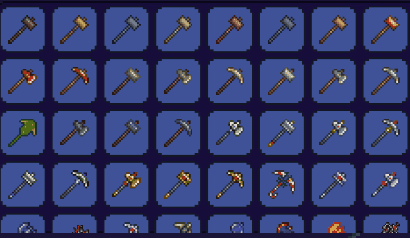
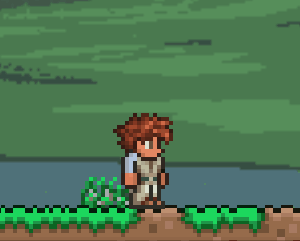
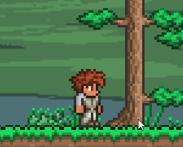
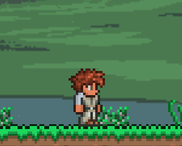

Equipment
Tools
There are a variety of tools you start with in Terraria that will help aid you with fighting, mining, and exploring the dangerous land. You will be able to upgrade your equipment as you explore, mine, craft, and gain more items.
Starting Equipment
As you start the game you will begin with only three items.
A Copper Pickaxe, Axe, and Heavy
Shortsword



These will be the items that will help aid you in the start of your journey. With wood you obtained with your axe, ore you mined with your pickaxe, and loot dropped by the enemies you slayed you'll be able to craft a crafting table and start your journey to being a better player!